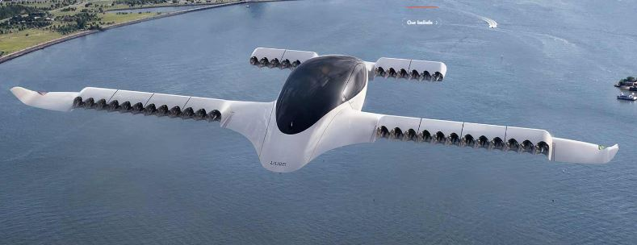

WHAT IS A FLYING TAXI ?
A flying taxi (also known as a drone taxi, passenger drone, or pilotless helicopter) is a type of personal air vehicle (PAV). it is an emerging type of air transportation service proposed to provide on demand air travel services. much like taxis. The emergence of this alternative to traditional ground transport methods has been enabled by unmanned aerial vehicle technologies and electric propulsion. The first passenger drone was introduced at the Consumer Electronics Show (CES) 2016 by Chinese entrepreneurs and is called the Ehang 184.
EHANG 184
WHY AIR TAXIS ?
Overcrowded roads, mile-long traffic jams and collapsing local transport systems in metropolitan areas require innovative solutions. Both established aviation companies and start-ups from all over the world are therefore researching aircraft that will shift local transport from the road to the air. Electrically powered "air taxis" could solve two problems at once: by dispensing with fossil fuels, particulate matter and CO² emissions can be reduced considerably, and by shifting local transport into the air, roads are relieved.The new propulsion technologies should also help to manage the conflict of interests between climate protection and increasing capacity requirements. Low prices and an ever-expanding route network make this possible: 9 billion passengers are expected to fly by 2050. This means that the passenger volume will more than double compared to the current level. This development will also be favoured by the production stop of the Airbus A380 and the change of course from wide-body aircraft to medium-haul jets. This will inevitably lead to growing aircraft fleets and even more traffic in the sky. some morre of their advantages are :
- it will be quiet
- it will be reliable
- it will have an all weather capacity
- will be Able to be flown either autonomously, or at least by anyone with a driver’s license.
- will be affordble as travel by a car or as an airliner
- will be comfortable
- will be highly energy efficient
COMPANIES WHICH HAVE STARTED THEIR WORK ON FLYING TAXIS:
AIRBUS: Airbus, the multinational European aerospace company, is developing two electric UAM vehicles with the goal to offer short-hop flights across congested big cities and from suburbs to city centers for a price that’s competitive with traditional ground taxi service.
JOBY AVIATION: One of the more secretive air taxi startups is Joby Aviation, based in Santa Cruz, California. The company has spent the last 10 years developing its own electric motors and technology for its eVTOL aircraft.In February 2018, the company announced that it received $100 million in venture funding from investors such as Capricorn Investment Group, Intel Capital, JetBlue Technology Ventures and Toyota AI Ventures.
KITTY HAWK: Another UAM company to watch is Kitty Hawk, established by Google co-founder and Alphabet CEO Larry Page. The Mountain View, California-based startup has developed three all-electric flying vehicles; however, only two prototypes seem poised to fly in the urban air taxi market (Kitty Hawk’s Flyer is a single-seat hovercraft intended for recreational use).

LILIUM: One company at the forefront of the UAM movement is Germany’s Lilium. The Munich-based air taxi startup completed the first vertical flight test of its new eVTOL five-seater aircraft, the Lilium Jet, in May. Lilium’s CEO and founder, Daniel Wiegand, said that within five years, a fleet of Lilium Jets may be shuttling people from Manhattan to Kennedy International Airport in 10 minutes for $70 a seat.
TERRAFUGIA: When it comes to designing and building an actual flying car, that’s what Chinese-owned, Massachusetts-based Terrafugia has been doing. The startup was created by Massachusetts Institute of Technology grads in 2006, and it was acquired in 2017 by Zhejiang Geely Holding Group, the same Chinese company that owns Volvo Cars and Lotus.
UBER: Uber wants to carve out a hefty piece of the UAM pie for itself. Considering that unlike other wannabe first-to-market UAM pioneers, Uber already has an app and brand that consumers recognize, the company is in a good position to break away from the pack. Uber is working with six aircraft manufacturers, each of which is developing an eVTOL aircraft designed and built for aerial ridesharing. The companies are Bell, Boeing Company, EmbraerX, Jaunt Air Mobility, Karem Aircraft and Pipistrel.
VOLOCOPTER: Bruchsal, Germany-based Volocopter GmbH is tackling UAM with its all-electric Volocopter 2X, an 18-rotor eVTOL air taxi that’s been referred to as a "gigantic drone you can sit in." The 2X can carry two people at speeds up to about 68 mph, and it has a flight time of 30 minutes with a maximum range of 17 miles. It can either be piloted or fly autonomously, and the 2X’s batteries can be easily swapped out by robots before continuing each trip.
FUTURE OF AIR TAXIS
The future of passenger drones remains uncertain since this technology is so new. Innovation in aerial drone technology, and in aerial traffic coordination, control, and collision-avoidance could result in rapid proliferation of passenger drones for civilian travel. Several companies are exploring the use of passenger drones as air-taxis and for air-ambulance services.[7] Passenger drone developers are working to overcome many challenges, including noise, small useful load, short flight times, airspace regulations, and scarce data on both safety and general operations.